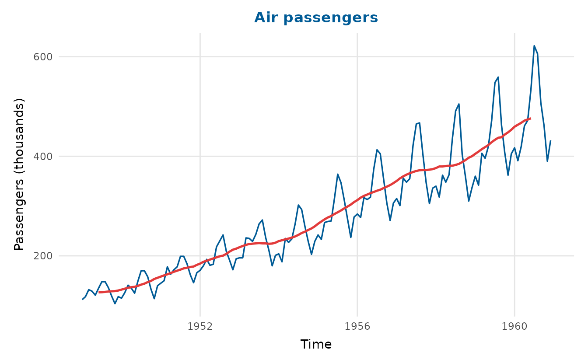
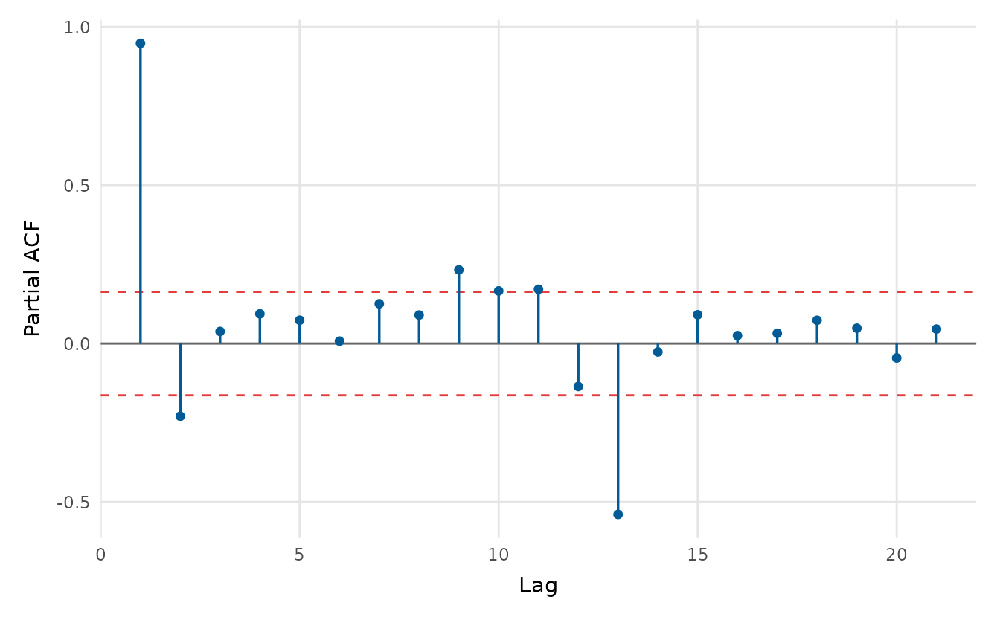
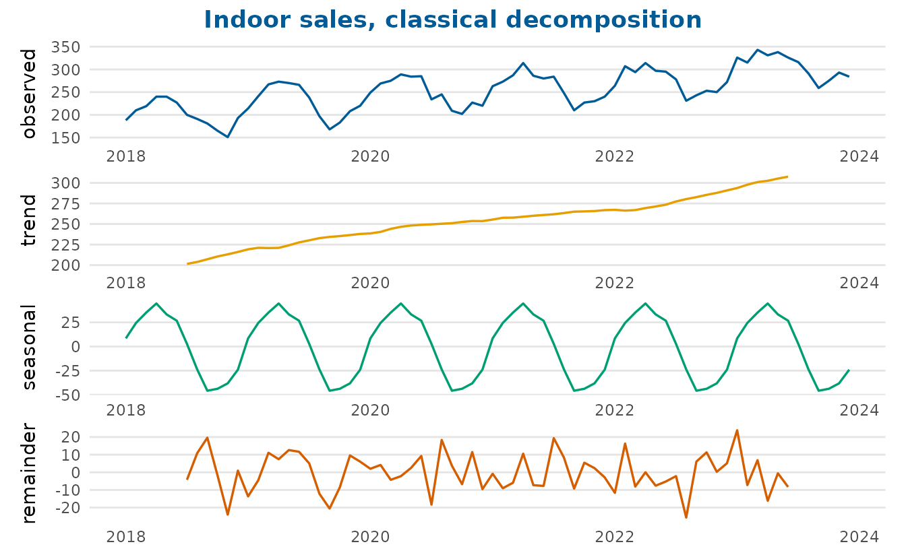
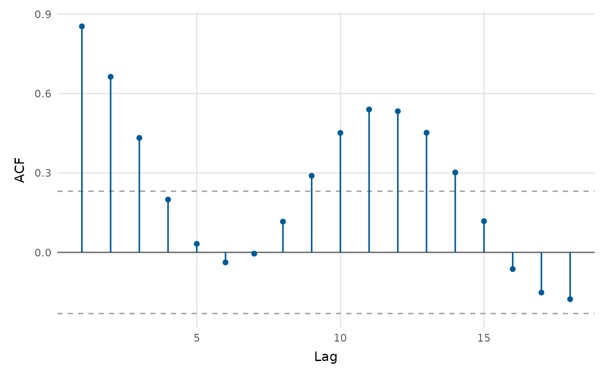
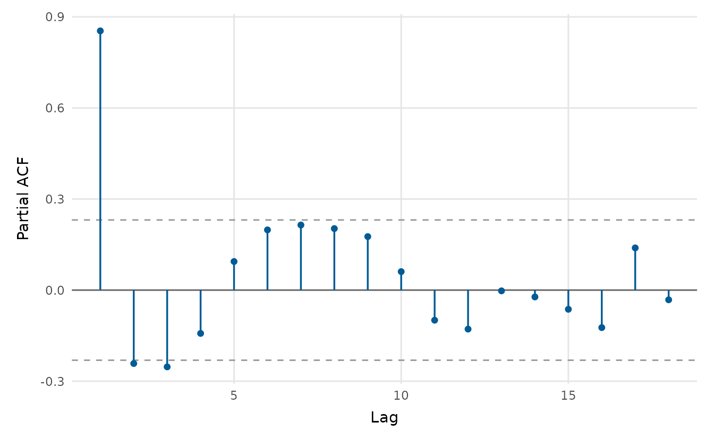
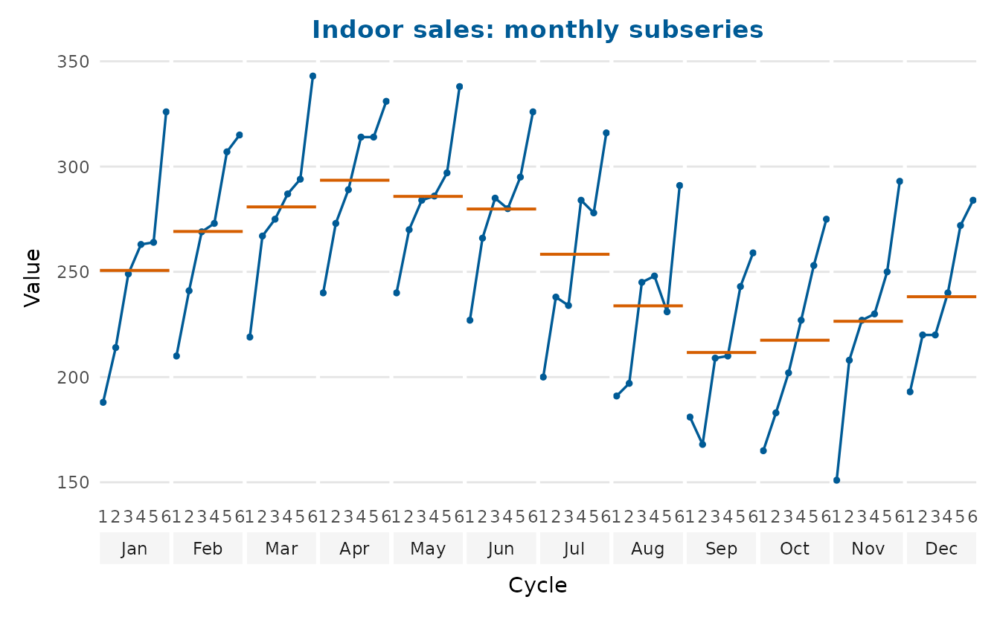
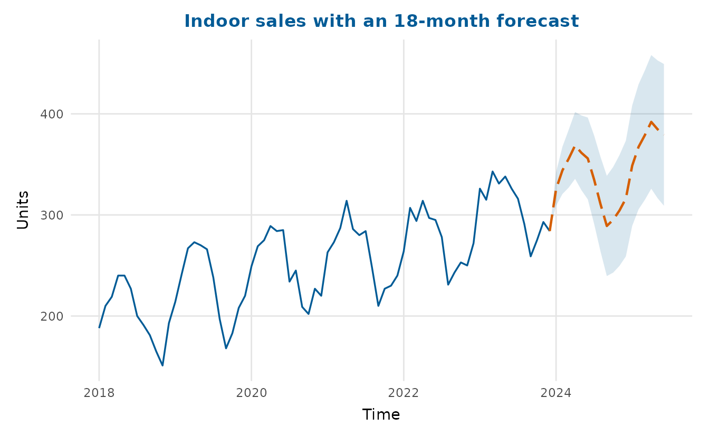

depictr provides a small, consistent set of time-series plots. The
examples use the bundled monthly_sales dataset: two product
lines (indoor and outdoor), each with six
years of monthly observations carrying a trend, a twelve-month seasonal
cycle and noise.
Plotting one or several series
timeseries_plot() accepts a ts object, a
numeric vector, or a data frame with time, value and (optionally) group
columns. Passing the long-form data frame with a grouping column draws
both series at once, each in its own colour; a moving-average overlay is
one argument away.
timeseries_plot(monthly_sales, time = date, value = sales, group = series,
rolling = 12, title = "Monthly sales by product line",
y_lab = "Units")
For the single-series views (decomposition, autocorrelation, the
seasonal plot and forecasting) we extract one line as a monthly
ts object of frequency 12.
Decomposition
decompose_plot() separates a seasonal series into trend,
seasonal and remainder components. Use method = "stl" (the
default, loess-based) or method = "classical". Setting
confidence = TRUE shades a band around the smoothed trend,
from the spread of the remainder, so the scale of the unexplained
variation is visible rather than implied by the line alone.
decompose_plot(indoor_ts, confidence = TRUE, title = "Indoor sales, decomposed")
Autocorrelation
acf_plot() draws the autocorrelation (or, with
type = "partial", the partial autocorrelation) function,
with approximate significance bounds. The spikes at multiples of twelve
are the annual seasonality.
acf_plot(indoor_ts)
acf_plot(indoor_ts, type = "partial")
The seasonal pattern up close
seasonal_plot() draws a seasonal-subseries (cycle) plot:
one small panel per month, with the value traced across successive years
and a reference line at each month’s mean. This shows the seasonal shape
(differences between panels) and the year-on-year trend within
each month (the slope inside each panel) at the same time,
something a single overlaid line cannot do.
seasonal_plot(indoor_ts, title = "Indoor sales: monthly subseries")
With style = "season" every year becomes its own line
over the months on a shared axis, which is handy for spotting an unusual
year.
seasonal_plot(indoor_ts, style = "season",
title = "Indoor sales: one line per year")
Forecasting
ts_forecast() is a lightweight, dependency-free
forecaster: it decomposes the series with STL, extrapolates the recent
trend, carries the seasonal pattern forward, and returns point forecasts
with prediction intervals that widen with the horizon.
fc <- ts_forecast(indoor_ts, h = 18, level = 0.9)
head(fc)
#> time fit lwr upr
#> 1 2024.000 325.4647 308.9359 341.9935
#> 2 2024.083 344.0097 320.6345 367.3850
#> 3 2024.167 355.7215 327.0927 384.3502
#> 4 2024.250 368.7429 335.6853 401.8005
#> 5 2024.333 361.4311 324.4716 398.3906
#> 6 2024.417 355.8928 315.4057 396.3799Passing an integer horizon straight to timeseries_plot()
overlays that forecast on the history: the point forecast continues the
line and the shaded ribbon shows the (growing) 90% prediction
interval.
timeseries_plot(indoor_ts, forecast = 18, level = 0.9,
title = "Indoor sales with an 18-month forecast",
y_lab = "Units")
For a fully specified statistical model, fit it yourself (for example
with forecast::forecast()) and pass the resulting
time/fit/lwr/upr
columns to timeseries_plot(forecast = ) as a data
frame.